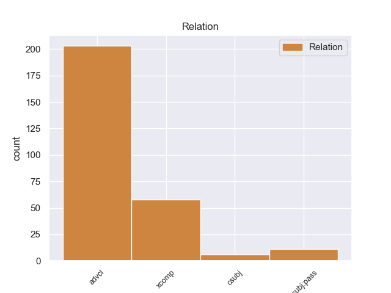
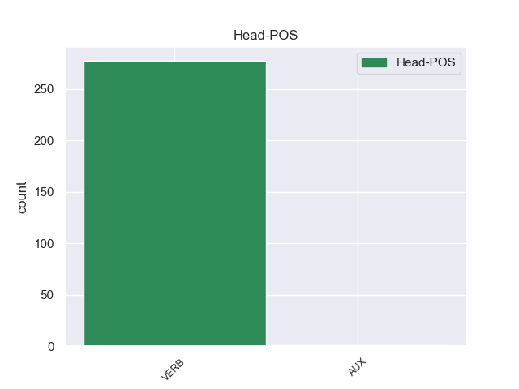
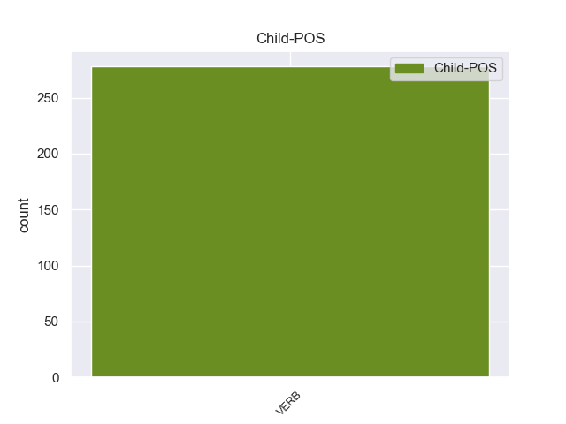

Distribution of features within this leaf



Agreement Rules sorted by frequency.
- When the dependent token is the adverbial clause modifier(advcl) of the head token, and the dependent token is VERB.
1 Με _ _ _ _ 0 _ _ _
2 αυτές _ _ _ _ 0 _ _ _
3 τις _ _ _ _ 0 _ _ _
4 κατηγορίες _ _ _ _ 0 _ _ _
5 , _ _ _ _ 0 _ _ _
6 από _ _ _ _ 0 _ _ _
7 τις _ _ _ _ 0 _ _ _
8 οποίες _ _ _ _ 0 _ _ _
9 η _ _ _ _ 0 _ _ _
10 πρώτη _ _ _ _ 0 _ _ _
11 αφορά _ _ _ _ 0 _ _ _
12 λαθρεμπόριο _ _ _ _ 0 _ _ _
13 όπλων _ _ _ _ 0 _ _ _
14 κλπ. _ _ _ _ 0 _ _ _
15 , _ _ _ _ 0 _ _ _
16 και _ _ _ _ 0 _ _ _
17 βαρύνει _ _ _ _ 0 _ _ _
18 τόσο _ _ _ _ 0 _ _ _
19 τον _ _ _ _ 0 _ _ _
20 κ. _ _ _ _ 0 _ _ _
21 Pasqua _ _ _ _ 0 _ _ _
22 όσο _ _ _ _ 0 _ _ _
23 και _ _ _ _ 0 _ _ _
24 τον _ _ _ _ 0 _ _ _
25 κ. _ _ _ _ 0 _ _ _
26 Marchiani _ _ _ _ 0 _ _ _
27 , _ _ _ _ 0 _ _ _
28 ενώ _ _ _ _ 0 _ _ _
29 η _ _ _ _ 0 _ _ _
30 δεύτερη _ _ _ _ 0 _ _ _
31 στρέφεται _ _ _ _ 0 _ _ _
32 μόνον _ _ _ _ 0 _ _ _
33 εναντίον _ _ _ _ 0 _ _ _
34 του _ _ _ _ 0 _ _ _
35 κ. _ _ _ _ 0 _ _ _
36 Pasqua _ _ _ _ 0 _ _ _
37 , _ _ _ _ 0 _ _ _
38 οι _ _ _ _ 0 _ _ _
39 ανακριτές _ _ _ _ 0 _ _ _
40 δικαστές _ _ _ _ 0 _ _ _
41 ζητούν ζητω VERB _ Aspect=Imp|Mood=Ind|Number=Plur|Person=3|Tense=Pres|VerbForm=Fin|Voice=Act 0 _ _ _
42 την _ _ _ _ 0 _ _ _
43 άρση _ _ _ _ 0 _ _ _
44 της _ _ _ _ 0 _ _ _
45 βουλευτικής _ _ _ _ 0 _ _ _
46 ασυλίας _ _ _ _ 0 _ _ _
47 των _ _ _ _ 0 _ _ _
48 εν _ _ _ _ 0 _ _ _
49 λόγω _ _ _ _ 0 _ _ _
50 δύο _ _ _ _ 0 _ _ _
51 κυρίων _ _ _ _ 0 _ _ _
52 , _ _ _ _ 0 _ _ _
53 προκειμένου _ _ _ _ 0 _ _ _
54 να _ _ _ _ 0 _ _ _
55 τους _ _ _ _ 0 _ _ _
56 επιβληθούν επιβλίζω VERB _ Aspect=Imp|Mood=Ind|Number=Plur|Person=3|Tense=Pres|VerbForm=Fin|Voice=Pass 41 advcl _ _
57 ορισμένα _ _ _ _ 0 _ _ _
58 μέτρα _ _ _ _ 0 _ _ _
59 δικαστικής _ _ _ _ 0 _ _ _
60 επιτήρησης _ _ _ _ 0 _ _ _
61 : _ _ _ _ 0 _ _ _
62 να _ _ _ _ 0 _ _ _
63 τους _ _ _ _ 0 _ _ _
64 απαγορευθεί _ _ _ _ 0 _ _ _
65 η _ _ _ _ 0 _ _ _
66 επαφή _ _ _ _ 0 _ _ _
67 με _ _ _ _ 0 _ _ _
68 διάφορους _ _ _ _ 0 _ _ _
69 μάρτυρες _ _ _ _ 0 _ _ _
70 ή _ _ _ _ 0 _ _ _
71 συγκατηγορουμένους _ _ _ _ 0 _ _ _
72 σ _ _ _ _ 0 _ _ _
73 τις _ _ _ _ 0 _ _ _
74 υποθέσεις _ _ _ _ 0 _ _ _
75 αυτές _ _ _ _ 0 _ _ _
76 και _ _ _ _ 0 _ _ _
77 η _ _ _ _ 0 _ _ _
78 μετάβαση _ _ _ _ 0 _ _ _
79 σε _ _ _ _ 0 _ _ _
80 διάφορες _ _ _ _ 0 _ _ _
81 χώρες _ _ _ _ 0 _ _ _
82 , _ _ _ _ 0 _ _ _
83 καθώς _ _ _ _ 0 _ _ _
84 και _ _ _ _ 0 _ _ _
85 να _ _ _ _ 0 _ _ _
86 τους _ _ _ _ 0 _ _ _
87 επιβληθεί _ _ _ _ 0 _ _ _
88 ενδεχομένως _ _ _ _ 0 _ _ _
89 η _ _ _ _ 0 _ _ _
90 καταβολή _ _ _ _ 0 _ _ _
91 εγγύησης _ _ _ _ 0 _ _ _
92 . _ _ _ _ 0 _ _ _
1 Μόνο _ _ _ _ 0 _ _ _
2 με _ _ _ _ 0 _ _ _
3 αυτόν _ _ _ _ 0 _ _ _
4 μπορούν μπορώ VERB _ Aspect=Imp|Mood=Ind|Number=Plur|Person=3|Tense=Pres|VerbForm=Fin|Voice=Act 0 _ _ _
5 να _ _ _ _ 0 _ _ _
6 γίνουν γίνομαι VERB _ Aspect=Imp|Mood=Ind|Number=Plur|Person=3|Tense=Pres|VerbForm=Fin|Voice=Pass 4 xcomp _ _
7 διαπραγματεύσεις _ _ _ _ 0 _ _ _
8 . _ _ _ _ 0 _ _ _
1 Σύμφωνα _ _ _ _ 0 _ _ _
2 με _ _ _ _ 0 _ _ _
3 δημοσιεύματα _ _ _ _ 0 _ _ _
4 από _ _ _ _ 0 _ _ _
5 διάφορες _ _ _ _ 0 _ _ _
6 περιοχές _ _ _ _ 0 _ _ _
7 της _ _ _ _ 0 _ _ _
8 Ελλάδας _ _ _ _ 0 _ _ _
9 , _ _ _ _ 0 _ _ _
10 υπολογίζεται υπολογίζω VERB _ Aspect=Perf|Mood=Ind|Number=Sing|Person=3|Tense=Past|VerbForm=Fin|Voice=Pass 0 _ _ _
11 ότι _ _ _ _ 0 _ _ _
12 φέτος _ _ _ _ 0 _ _ _
13 δεν _ _ _ _ 0 _ _ _
14 κατάφεραν κατάφεώ VERB _ Aspect=Perf|Mood=Ind|Number=Plur|Person=3|Tense=Past|VerbForm=Fin|Voice=Act 10 csubj:pass _ _
15 να _ _ _ _ 0 _ _ _
16 εμβολιαστούν _ _ _ _ 0 _ _ _
17 περισσότεροι _ _ _ _ 0 _ _ _
18 από _ _ _ _ 0 _ _ _
19 το _ _ _ _ 0 _ _ _
20 40% _ _ _ _ 0 _ _ _
21 αυτών _ _ _ _ 0 _ _ _
22 που _ _ _ _ 0 _ _ _
23 είχαν _ _ _ _ 0 _ _ _
24 ανάγκη _ _ _ _ 0 _ _ _
25 το _ _ _ _ 0 _ _ _
26 εμβόλιο _ _ _ _ 0 _ _ _
27 , _ _ _ _ 0 _ _ _
28 δηλαδή _ _ _ _ 0 _ _ _
29 αποτελούσαν _ _ _ _ 0 _ _ _
30 πληθυσμό _ _ _ _ 0 _ _ _
31 υψηλού _ _ _ _ 0 _ _ _
32 κινδύνου _ _ _ _ 0 _ _ _
33 . _ _ _ _ 0 _ _ _
1 Εάν _ _ _ _ 0 _ _ _
2 προσπαθήσετε _ _ _ _ 0 _ _ _
3 να _ _ _ _ 0 _ _ _
4 κάνετε _ _ _ _ 0 _ _ _
5 τα _ _ _ _ 0 _ _ _
6 πάντα _ _ _ _ 0 _ _ _
7 , _ _ _ _ 0 _ _ _
8 μπορεί μπορώ VERB _ Aspect=Imp|Mood=Ind|Number=Sing|Person=3|Tense=Pres|VerbForm=Fin|Voice=Act 0 _ _ _
9 να _ _ _ _ 0 _ _ _
10 καταλήξετε καταλήω VERB _ Aspect=Imp|Mood=Ind|Number=Sing|Person=1|Tense=Pres|VerbForm=Fin|Voice=Act 8 csubj _ _
11 να _ _ _ _ 0 _ _ _
12 κάνετε _ _ _ _ 0 _ _ _
13 πολύ _ _ _ _ 0 _ _ _
14 λίγα _ _ _ _ 0 _ _ _
15 . _ _ _ _ 0 _ _ _
Disagree Examples:
1 Με _ _ _ _ 0 _ _ _
2 κατηγόρησαν _ _ _ _ 0 _ _ _
3 ότι _ _ _ _ 0 _ _ _
4 συμφώνησα συμφωνώ VERB VERB Aspect=Perf|Mood=Ind|Number=Sing|Person=1|Tense=Past|VerbForm=Fin|Voice=Act 0 _ _ _
5 όσον _ _ _ _ 0 _ _ _
6 αφορά αφορώ VERB VERB Aspect=Imp|Mood=Ind|Number=Sing|Person=3|Tense=Pres|VerbForm=Fin|Voice=Act 4 advcl _ _
7 σ _ _ _ _ 0 _ _ _
8 το _ _ _ _ 0 _ _ _
9 ευρωπαϊκό _ _ _ _ 0 _ _ _
10 ένταλμα _ _ _ _ 0 _ _ _
11 συλλήψεως _ _ _ _ 0 _ _ _
12 , _ _ _ _ 0 _ _ _
13 τη _ _ _ _ 0 _ _ _
14 στιγμή _ _ _ _ 0 _ _ _
15 που _ _ _ _ 0 _ _ _
16 υποστηρίζω _ _ _ _ 0 _ _ _
17 σθεναρά _ _ _ _ 0 _ _ _
18 τα _ _ _ _ 0 _ _ _
19 ατομικά _ _ _ _ 0 _ _ _
20 δικαιώματα _ _ _ _ 0 _ _ _
21 . _ _ _ _ 0 _ _ _
1 Επιπλέον _ _ _ _ 0 _ _ _
2 , _ _ _ _ 0 _ _ _
3 θεωρούμε θεωρώ VERB VERB Aspect=Imp|Mood=Ind|Number=Plur|Person=1|Tense=Pres|VerbForm=Fin|Voice=Act 0 _ _ _
4 αυτά _ _ _ _ 0 _ _ _
5 τα _ _ _ _ 0 _ _ _
6 μέσα _ _ _ _ 0 _ _ _
7 ως _ _ _ _ 0 _ _ _
8 δικά _ _ _ _ 0 _ _ _
9 μας _ _ _ _ 0 _ _ _
10 , _ _ _ _ 0 _ _ _
11 επειδή _ _ _ _ 0 _ _ _
12 αυτό _ _ _ _ 0 _ _ _
13 το _ _ _ _ 0 _ _ _
14 Κοινοβούλιο _ _ _ _ 0 _ _ _
15 - _ _ _ _ 0 _ _ _
16 όπως _ _ _ _ 0 _ _ _
17 εσείς _ _ _ _ 0 _ _ _
18 υπενθυμίσατε _ _ _ _ 0 _ _ _
19 - _ _ _ _ 0 _ _ _
20 εργάστηκε εργάζομαι VERB VERB Aspect=Perf|Mood=Ind|Number=Sing|Person=3|Tense=Past|VerbForm=Fin|Voice=Pass 3 advcl _ _
21 πολύ _ _ _ _ 0 _ _ _
22 για _ _ _ _ 0 _ _ _
23 την _ _ _ _ 0 _ _ _
24 επίτευξή _ _ _ _ 0 _ _ _
25 τους _ _ _ _ 0 _ _ _
26 . _ _ _ _ 0 _ _ _
1 Από _ _ _ _ 0 _ _ _
2 τους _ _ _ _ 0 _ _ _
3 400 _ _ _ _ 0 _ _ _
4 συμμετέχοντες _ _ _ _ 0 _ _ _
5 σ _ _ _ _ 0 _ _ _
6 την _ _ _ _ 0 _ _ _
7 έρευνα _ _ _ _ 0 _ _ _
8 , _ _ _ _ 0 _ _ _
9 το _ _ _ _ 0 _ _ _
10 39% _ _ _ _ 0 _ _ _
11 δήλωσε δηλώνω VERB VERB Aspect=Perf|Mood=Ind|Number=Sing|Person=3|Tense=Past|VerbForm=Fin|Voice=Act 0 _ _ _
12 ότι _ _ _ _ 0 _ _ _
13 " _ _ _ _ 0 _ _ _
14 δεν _ _ _ _ 0 _ _ _
15 εργάζεται _ _ _ _ 0 _ _ _
16 τη _ _ _ _ 0 _ _ _
17 συγκεκριμένη _ _ _ _ 0 _ _ _
18 χρονική _ _ _ _ 0 _ _ _
19 περίοδο _ _ _ _ 0 _ _ _
20 " _ _ _ _ 0 _ _ _
21 , _ _ _ _ 0 _ _ _
22 ενώ _ _ _ _ 0 _ _ _
23 ένα _ _ _ _ 0 _ _ _
24 σημαντικό _ _ _ _ 0 _ _ _
25 ποσοστό _ _ _ _ 0 _ _ _
26 ( _ _ _ _ 0 _ _ _
27 30% _ _ _ _ 0 _ _ _
28 ) _ _ _ _ 0 _ _ _
29 δηλώνει δηλώνω VERB VERB Aspect=Imp|Mood=Ind|Number=Sing|Person=3|Tense=Pres|VerbForm=Fin|Voice=Act 11 advcl _ _
30 ότι _ _ _ _ 0 _ _ _
31 " _ _ _ _ 0 _ _ _
32 παραμένει _ _ _ _ 0 _ _ _
33 άνεργο _ _ _ _ 0 _ _ _
34 εδώ _ _ _ _ 0 _ _ _
35 και _ _ _ _ 0 _ _ _
36 περισσότερο _ _ _ _ 0 _ _ _
37 από _ _ _ _ 0 _ _ _
38 δύο _ _ _ _ 0 _ _ _
39 χρόνια _ _ _ _ 0 _ _ _
40 " _ _ _ _ 0 _ _ _
41 . _ _ _ _ 0 _ _ _
1 Ο _ _ _ _ 0 _ _ _
2 γιος _ _ _ _ 0 _ _ _
3 της _ _ _ _ 0 _ _ _
4 , _ _ _ _ 0 _ _ _
5 πρίγκηπας _ _ _ _ 0 _ _ _
6 Γουλιέλμος _ _ _ _ 0 _ _ _
7 - _ _ _ _ 0 _ _ _
8 Αλέξανδρος _ _ _ _ 0 _ _ _
9 - _ _ _ _ 0 _ _ _
10 τώρα _ _ _ _ 0 _ _ _
11 θα _ _ _ _ 0 _ _ _
12 είναι _ _ _ _ 0 _ _ _
13 γνωστός _ _ _ _ 0 _ _ _
14 ως _ _ _ _ 0 _ _ _
15 βασιλιάς _ _ _ _ 0 _ _ _
16 Γουλιέλμος _ _ _ _ 0 _ _ _
17 Δ' _ _ _ _ 0 _ _ _
18 - _ _ _ _ 0 _ _ _
19 ήταν _ _ _ _ 0 _ _ _
20 γνωστός _ _ _ _ 0 _ _ _
21 για _ _ _ _ 0 _ _ _
22 τα _ _ _ _ 0 _ _ _
23 ερωτικά _ _ _ _ 0 _ _ _
24 του _ _ _ _ 0 _ _ _
25 σκάνδαλα _ _ _ _ 0 _ _ _
26 , _ _ _ _ 0 _ _ _
27 αν _ _ _ _ 0 _ _ _
28 και _ _ _ _ 0 _ _ _
29 τη _ _ _ _ 0 _ _ _
30 τελευταία _ _ _ _ 0 _ _ _
31 δεκαετία _ _ _ _ 0 _ _ _
32 σταμάτησε σταματώ VERB VERB Aspect=Perf|Mood=Ind|Number=Sing|Person=3|Tense=Past|VerbForm=Fin|Voice=Act 0 _ _ _
33 να _ _ _ _ 0 _ _ _
34 μπλέκει μπλέκω VERB VERB Aspect=Imp|Mood=Ind|Number=Sing|Person=3|Tense=Pres|VerbForm=Fin|Voice=Act 32 xcomp _ _
35 σε _ _ _ _ 0 _ _ _
36 σκάνδαλα _ _ _ _ 0 _ _ _
37 και _ _ _ _ 0 _ _ _
38 ανέλαβε _ _ _ _ 0 _ _ _
39 την _ _ _ _ 0 _ _ _
40 προεδρεία _ _ _ _ 0 _ _ _
41 της _ _ _ _ 0 _ _ _
42 Επιτροπής _ _ _ _ 0 _ _ _
43 του _ _ _ _ 0 _ _ _
44 ΟΗΕ _ _ _ _ 0 _ _ _
45 για _ _ _ _ 0 _ _ _
46 το _ _ _ _ 0 _ _ _
47 Νερό _ _ _ _ 0 _ _ _
48 , _ _ _ _ 0 _ _ _
49 καθώς _ _ _ _ 0 _ _ _
50 επίσης _ _ _ _ 0 _ _ _
51 συνεργάζεται _ _ _ _ 0 _ _ _
52 με _ _ _ _ 0 _ _ _
53 τη _ _ _ _ 0 _ _ _
54 Διεθνή _ _ _ _ 0 _ _ _
55 Ολυμπιακή _ _ _ _ 0 _ _ _
56 Επιτροπή _ _ _ _ 0 _ _ _
57 . _ _ _ _ 0 _ _ _
1 Ο _ _ _ _ 0 _ _ _
2 γιος _ _ _ _ 0 _ _ _
3 της _ _ _ _ 0 _ _ _
4 , _ _ _ _ 0 _ _ _
5 πρίγκηπας _ _ _ _ 0 _ _ _
6 Γουλιέλμος _ _ _ _ 0 _ _ _
7 - _ _ _ _ 0 _ _ _
8 Αλέξανδρος _ _ _ _ 0 _ _ _
9 - _ _ _ _ 0 _ _ _
10 τώρα _ _ _ _ 0 _ _ _
11 θα _ _ _ _ 0 _ _ _
12 είναι _ _ _ _ 0 _ _ _
13 γνωστός _ _ _ _ 0 _ _ _
14 ως _ _ _ _ 0 _ _ _
15 βασιλιάς _ _ _ _ 0 _ _ _
16 Γουλιέλμος _ _ _ _ 0 _ _ _
17 Δ' _ _ _ _ 0 _ _ _
18 - _ _ _ _ 0 _ _ _
19 ήταν _ _ _ _ 0 _ _ _
20 γνωστός _ _ _ _ 0 _ _ _
21 για _ _ _ _ 0 _ _ _
22 τα _ _ _ _ 0 _ _ _
23 ερωτικά _ _ _ _ 0 _ _ _
24 του _ _ _ _ 0 _ _ _
25 σκάνδαλα _ _ _ _ 0 _ _ _
26 , _ _ _ _ 0 _ _ _
27 αν _ _ _ _ 0 _ _ _
28 και _ _ _ _ 0 _ _ _
29 τη _ _ _ _ 0 _ _ _
30 τελευταία _ _ _ _ 0 _ _ _
31 δεκαετία _ _ _ _ 0 _ _ _
32 σταμάτησε σταματώ VERB VERB Aspect=Perf|Mood=Ind|Number=Sing|Person=3|Tense=Past|VerbForm=Fin|Voice=Act 0 _ _ _
33 να _ _ _ _ 0 _ _ _
34 μπλέκει _ _ _ _ 0 _ _ _
35 σε _ _ _ _ 0 _ _ _
36 σκάνδαλα _ _ _ _ 0 _ _ _
37 και _ _ _ _ 0 _ _ _
38 ανέλαβε _ _ _ _ 0 _ _ _
39 την _ _ _ _ 0 _ _ _
40 προεδρεία _ _ _ _ 0 _ _ _
41 της _ _ _ _ 0 _ _ _
42 Επιτροπής _ _ _ _ 0 _ _ _
43 του _ _ _ _ 0 _ _ _
44 ΟΗΕ _ _ _ _ 0 _ _ _
45 για _ _ _ _ 0 _ _ _
46 το _ _ _ _ 0 _ _ _
47 Νερό _ _ _ _ 0 _ _ _
48 , _ _ _ _ 0 _ _ _
49 καθώς _ _ _ _ 0 _ _ _
50 επίσης _ _ _ _ 0 _ _ _
51 συνεργάζεται συνεργάζομαι VERB VERB Aspect=Imp|Mood=Ind|Number=Sing|Person=3|Tense=Pres|VerbForm=Fin|Voice=Pass 32 advcl _ _
52 με _ _ _ _ 0 _ _ _
53 τη _ _ _ _ 0 _ _ _
54 Διεθνή _ _ _ _ 0 _ _ _
55 Ολυμπιακή _ _ _ _ 0 _ _ _
56 Επιτροπή _ _ _ _ 0 _ _ _
57 . _ _ _ _ 0 _ _ _